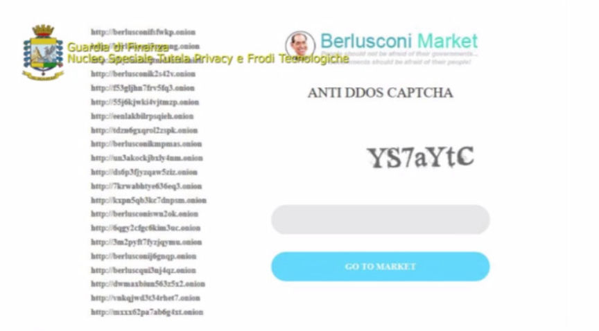
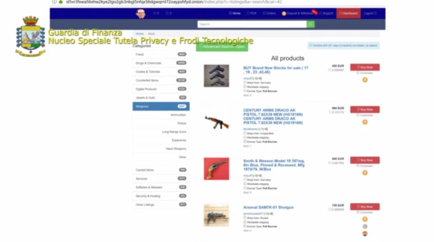
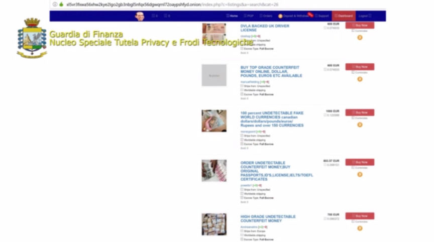
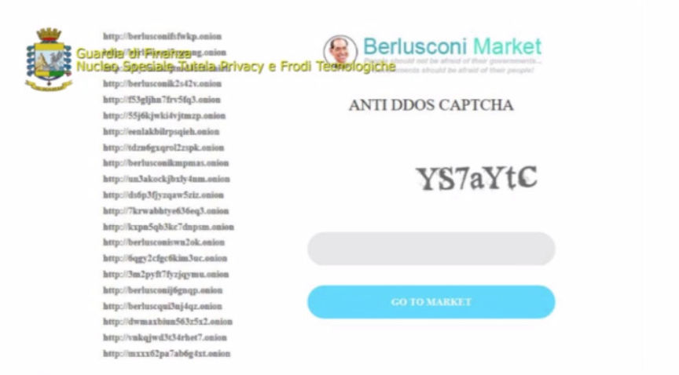
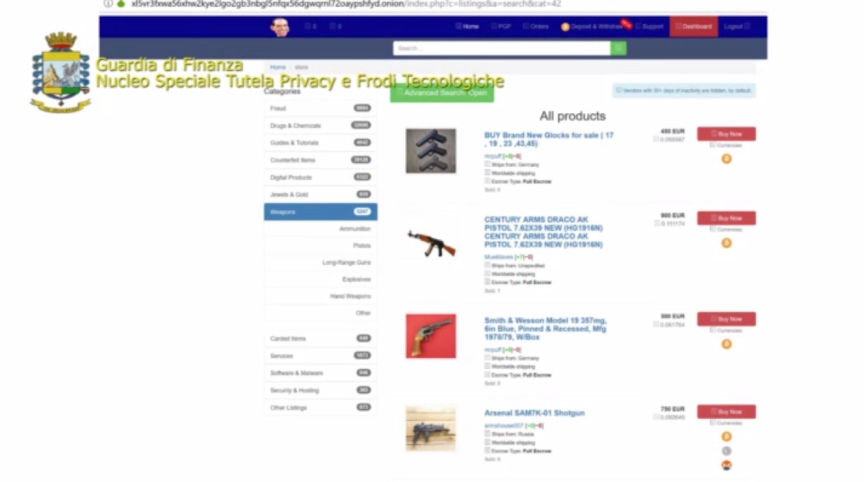
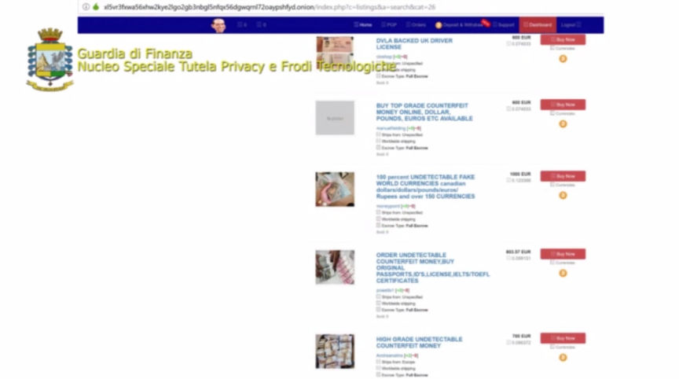

Italian Authorities Seized Berlusconi Market
~3 min read | Published on 2019-11-07, tagged Darkweb-Market, Seized using 627 words.
Italian law enforcement announced the shutdown of Berlusconi Market and arrest of three individuals suspected of running the marketplace. The investigation into the market started in May and investigation into vendors on the marketplace is ongoing.
In an early press release, the Guardia di Finanza announced the arrest of three suspected Berlusconi Market administrators and the seizure of Berlusconi Market. “[The market], with over 100,000 ads, was considered the most reliable illegal resource of the dark web,” the announcement said.
The investigation began with the arrest of G00d00 in May, as reported by Darknetlive and later confirmed by a former administrator of Italian Darknet Community.
The investigation began in May 2019. Law enforcement in Barletta identified a prolific darkweb vendor identified as g00d00 as well as a second individual linked to the darkweb drug trafficking operation. During the investigation into g00d00, Italian authorities seized 2.2 kg of cocaine, ketamine, and MDMA. The vendor(s) had already prepared the drugs for sale on the darkweb. During the raid at g00d00’s house, authorities seized electronics that linked g00d00 to Bitcoin transactions originating from Berlusconi Market. Italian authorities then examined the Bitcoin transactions associated with g00d00 and Berlusconi Market using “the best forensic analysis techniques.” This forensic analysis allowed them to “trace” the administrators of Berlusconi Market.
G00d00 had access to Berlusconi Market’s private key at the time of his arrest, according to HugBunter. HugBunter also noticed that the market had changed the key after the news of the arrest became public.
During the investigation into g00d00 and the second suspect, authorities learned that both suspects had a role in the administration or moderation of Berlusconi Market (in addition to their drug trafficking operation). Forensic analysis of the devices seized from the arrested subjects led to the discovery that “Berlusconi Market was managed by two “nicknames” of which one - VladimirPutin had the role of administrator and the other - EmmanuelMacron had the role of a moderator.”
“Starting in January 2019, Berlusconi Market became the most important Dark Web market, both in terms of quantity of items for sale and the volume of transactions with over 100,000 advertisements for illegal products,” the announcement said.
Forensic analysis linked “conversations exchanged through instant messaging applications with a third party emerged, which managed to exercise a sort of control over the proceeds linked to the Berlusconi Market sales platform as administrator of the market itself.” Investigators used this information to identify the third subject, a resident of Puglia, Italy.
The three suspects had established a partnership of sorts, according to Italian authorities. They split expenses related to the operation of Berlusconi Market; made management decisions; all three were in possession of administrator credentials; all three split the Bitcoin earned as the marketplace’s staff and/or administrators (the market transacted two million Euros annually, according to the announcement).
The market has been inaccessible for weeks.
The elements gathered thanks to the meticulous investigative activities carried out by the specialized staff of the Privacy Protection and Technological Fraud Unit of the Guardia di Finanza, with the constant coordination of the Public Prosecutor of Brescia, led to the issuance of personal precautionary measures for custody in prison at with three subjects (GDM and GR, residing in Puglia and LDV residing in Puglia and domiciled in Turin). Officials and judicial police officers belonging to the aforementioned Special Unit carried out the measures ordered, also carrying out 5 house searches in Barletta (BT), Andria (BT), Putignano (BA) and Turin. During the searches several technological devices were seized (personal computers, notebooks, digital memories and smartphones) on which the forensic analysis will be subsequently carried out, also to trace the various Black Market vendors.
The Press Release.
In an early press release, the Guardia di Finanza announced the arrest of three suspected Berlusconi Market administrators and the seizure of Berlusconi Market. “[The market], with over 100,000 ads, was considered the most reliable illegal resource of the dark web,” the announcement said.
The investigation began with the arrest of G00d00 in May, as reported by Darknetlive and later confirmed by a former administrator of Italian Darknet Community.
The Berlusconi Market Homepage | Guardia di Finanza
The investigation began in May 2019. Law enforcement in Barletta identified a prolific darkweb vendor identified as g00d00 as well as a second individual linked to the darkweb drug trafficking operation. During the investigation into g00d00, Italian authorities seized 2.2 kg of cocaine, ketamine, and MDMA. The vendor(s) had already prepared the drugs for sale on the darkweb. During the raid at g00d00’s house, authorities seized electronics that linked g00d00 to Bitcoin transactions originating from Berlusconi Market. Italian authorities then examined the Bitcoin transactions associated with g00d00 and Berlusconi Market using “the best forensic analysis techniques.” This forensic analysis allowed them to “trace” the administrators of Berlusconi Market.
G00d00 had access to Berlusconi Market’s private key at the time of his arrest, according to HugBunter. HugBunter also noticed that the market had changed the key after the news of the arrest became public.
During the investigation into g00d00 and the second suspect, authorities learned that both suspects had a role in the administration or moderation of Berlusconi Market (in addition to their drug trafficking operation). Forensic analysis of the devices seized from the arrested subjects led to the discovery that “Berlusconi Market was managed by two “nicknames” of which one - VladimirPutin had the role of administrator and the other - EmmanuelMacron had the role of a moderator.”
Note the Use of the v3 Onion Service | Guardia di Finanza
“Starting in January 2019, Berlusconi Market became the most important Dark Web market, both in terms of quantity of items for sale and the volume of transactions with over 100,000 advertisements for illegal products,” the announcement said.
Forensic analysis linked “conversations exchanged through instant messaging applications with a third party emerged, which managed to exercise a sort of control over the proceeds linked to the Berlusconi Market sales platform as administrator of the market itself.” Investigators used this information to identify the third subject, a resident of Puglia, Italy.
A Listing on Berlusconi Market | Guardia di Finanza
The three suspects had established a partnership of sorts, according to Italian authorities. They split expenses related to the operation of Berlusconi Market; made management decisions; all three were in possession of administrator credentials; all three split the Bitcoin earned as the marketplace’s staff and/or administrators (the market transacted two million Euros annually, according to the announcement).
The market has been inaccessible for weeks.
The elements gathered thanks to the meticulous investigative activities carried out by the specialized staff of the Privacy Protection and Technological Fraud Unit of the Guardia di Finanza, with the constant coordination of the Public Prosecutor of Brescia, led to the issuance of personal precautionary measures for custody in prison at with three subjects (GDM and GR, residing in Puglia and LDV residing in Puglia and domiciled in Turin). Officials and judicial police officers belonging to the aforementioned Special Unit carried out the measures ordered, also carrying out 5 house searches in Barletta (BT), Andria (BT), Putignano (BA) and Turin. During the searches several technological devices were seized (personal computers, notebooks, digital memories and smartphones) on which the forensic analysis will be subsequently carried out, also to trace the various Black Market vendors.
The Press Release.